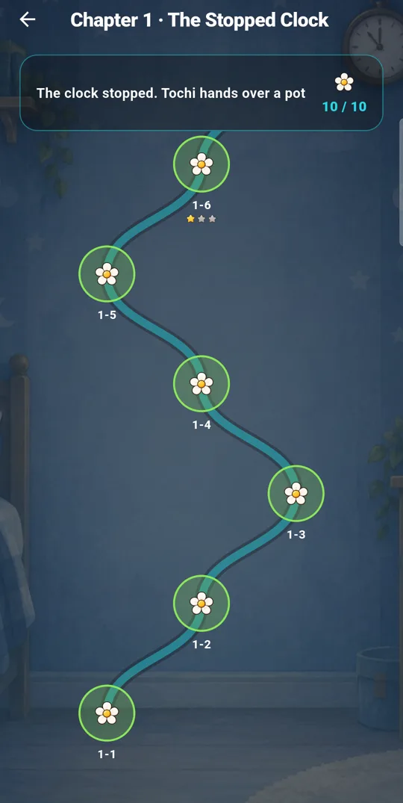
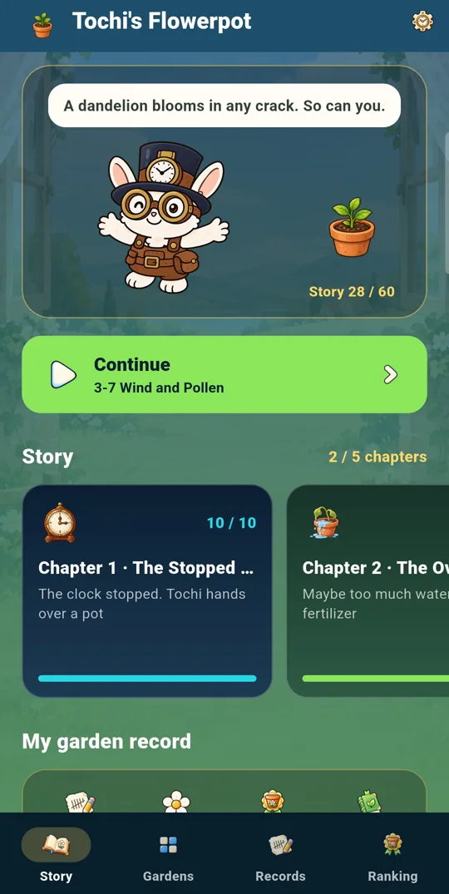
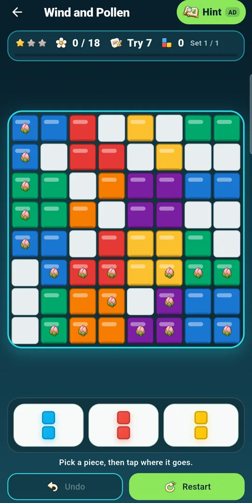
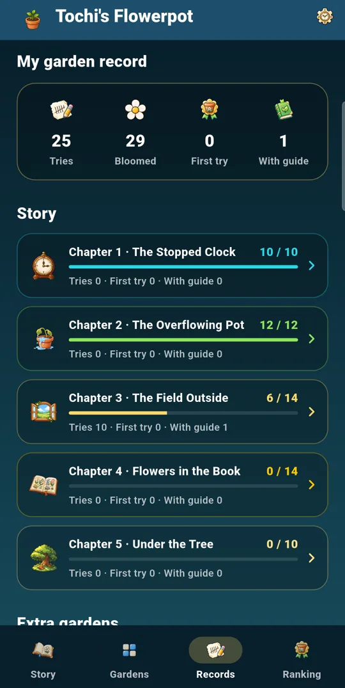

Fill a line, watch the buds open
Buds on the 8×8 board bloom when a clearing line passes over them. Bloom the stage's goal with the pieces you're given and the stage is yours.
A block puzzle that makes flowers bloom
In a room where the clock has stopped, Tochi the rabbit hands you a flowerpot. Fill a line with blocks and the flower buds burst open; every try collects a water drop that helps the seed in your pot grow. Every attempt counts as a try, not a failure.




How it plays
Place three pieces on the board. When a row or column fills up, it clears and the flowers on it bloom. If you get stuck, just try again.
Buds on the 8×8 board bloom when a clearing line passes over them. Bloom the stage's goal with the pieces you're given and the stage is yours.
From Chapter 3, clearing one line leaves a Wind, two at once leave Pollen, and three or more leave a Rainbow flower. Wind sweeps a whole line, Pollen bursts the 3×3 around it, and a Rainbow flower clears every block of its colour. Set them off in a row for a chain.
From your third try, the guide points at one next move. If the board has no way left, it takes back just enough moves first.
Each stage keeps which try you're on, your undos and your time on the device. Clear one on the first try and it gets a “First try!” stamp.
The ranking adds up your tries on stages you finished without the guide, up to 20 per stage. The players who kept going rank above the ones who were quick.
Every try earns a water drop. Trade drops for a seed and plant it, and it grows each time you clear a stage until it blooms. You won't know which flower it is until then.
Each story stage you bloom for the first time uncovers one piece of that chapter's picture. Finish the chapter to complete it, along with a line from Tochi.
Five chapters
To a child who planned so much the clock stopped, Tochi says: “Seeds can't read a schedule. Just plant it.” Each stage you clear uncovers a piece of the scene, and each finished chapter opens the next.
The clock stopped. Tochi hands over a pot
Maybe too much water and fertilizer
From the window, out into the field
Back home, looking flowers up in a book
The clock is back, but no one looks at it
Extra gardens · 100 stages each
One stage, start to finish
Drag a piece onto the board, or pick it and tap where it goes.
Tochi says a word, and you pick up where you left off.
Follow the path one stage at a time. Stars show how hard a stage is.

See which try you're on, and open a hint when you're stuck.

Tries and bloomed stages add up chapter by chapter.

Your game records stay on your device. The world ranking stores only an anonymous ID, a nickname, a country code and your scores, and you can delete it from the Records tab. Ads are served by Unity Ads: banners below the lists and above the board, and a full-screen ad before a hint.